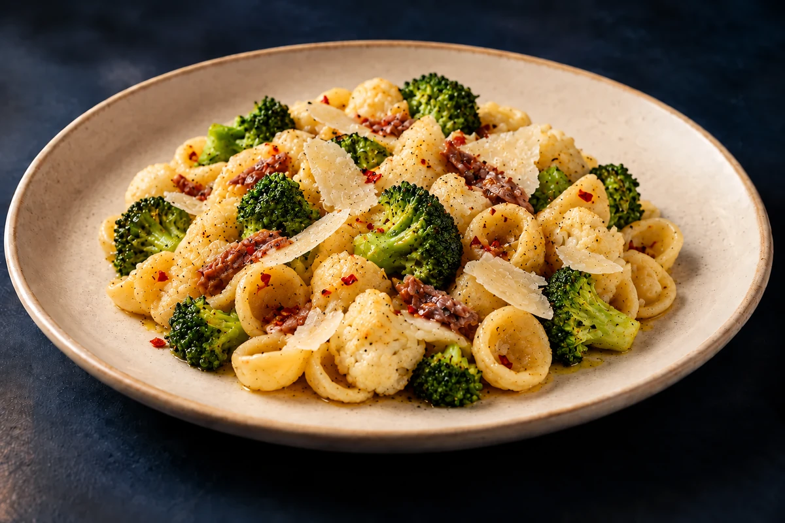
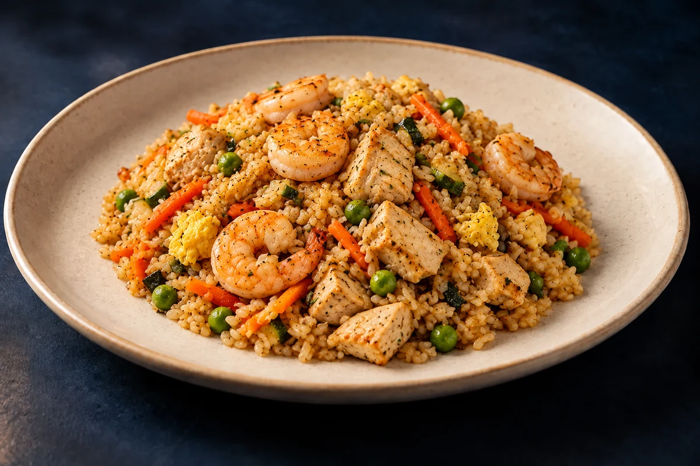
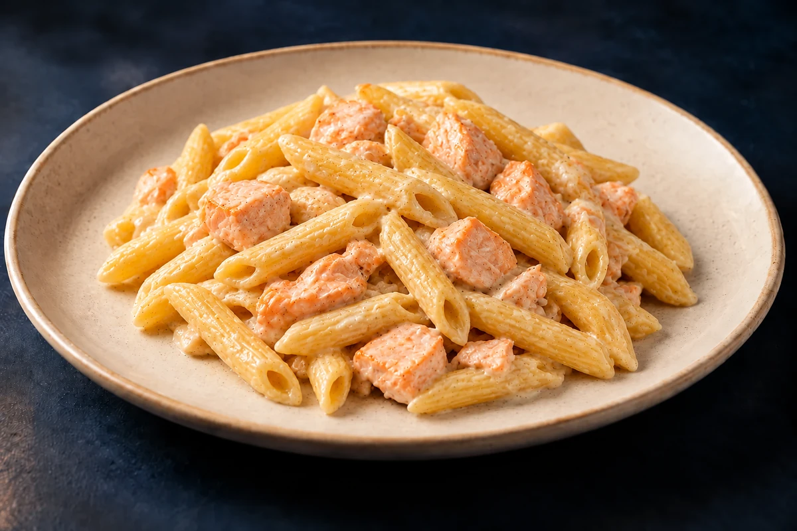
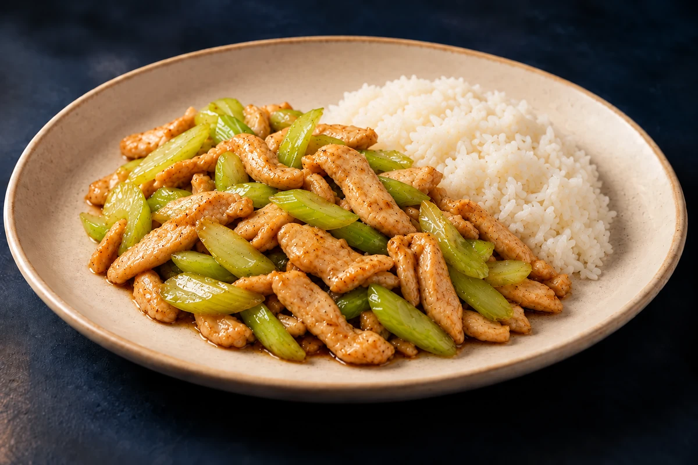
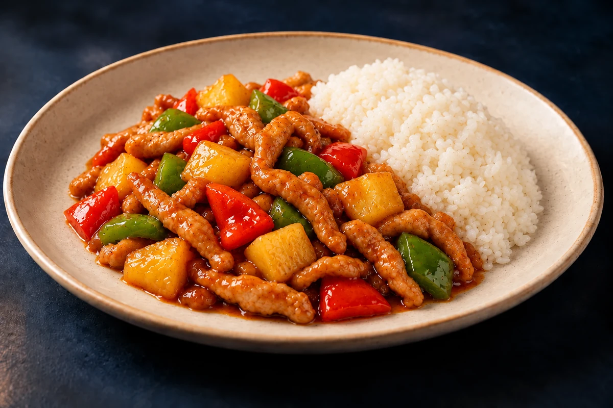
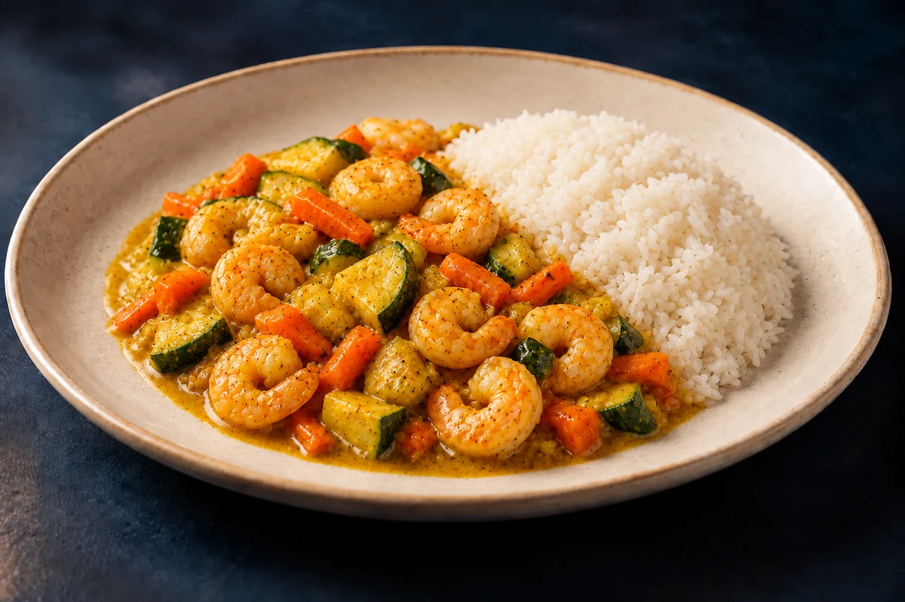
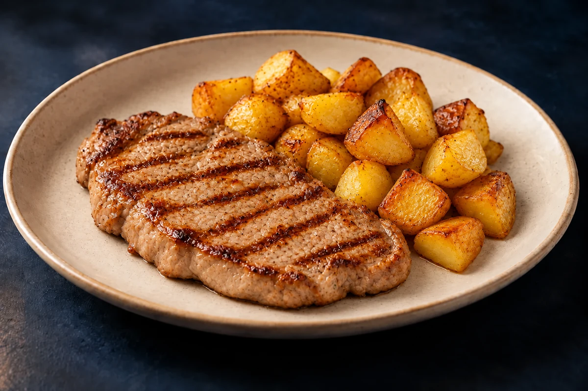

Orecchiette con broccoli, cavolfiori e scaglie di Parmigiano
La dolcezza dei cavolfiori incontra broccoli e acciughe, con scaglie di Parmigiano e una leggera nota piccante.
010407
Valido solo a pranzo,
nel giorno sotto indicato

La dolcezza dei cavolfiori incontra broccoli e acciughe, con scaglie di Parmigiano e una leggera nota piccante.
010407

Un salto di sapori e colori, con carote, zucchine, piselli e uova ad accompagnare pollo e gamberetti*.
0203

Il gusto delicato del salmone fresco avvolge le penne, con poca panna per una cremosità leggera.
010407

Il profumo fresco del sedano accompagna il pollo, servito con la semplicità del riso bianco al vapore.
09

La vivacità dell’agrodolce e la dolcezza dell’ananas incontrano i peperoni, con riso al vapore a bilanciare i sapori.

Le note speziate del curry esaltano gamberetti* e verdure, accompagnati da soffice riso bianco al vapore.
02

Il profumo della griglia e la doratura delle patate per un piatto dal gusto pieno. Disponibili 5 porzioni.
Le immagini dei piatti, pur realistiche, sono generate con intelligenza artificiale e hanno scopo illustrativo.
Attendere la conferma del Ristorante per considerare valido l’ordine.
Persone indicate nelle richieste via WhatsApp: 0
Dato indicativo: richieste avviate, non prenotazioni confermate. Azzeramento ogni giorno alle 15:00.